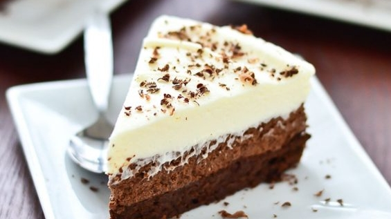

Referate: Deşertul Sahara
 ir a principal | Ir a lateral
Referate
Home luni, 12 mai 2008
Deşertul Sahara
Publicat de SaS la 05:50 Copyright © http://www.referat.evonet.ro
Sahara cu cele 9.000.000 km2 este deşertul cel mai mare de pe Pământ. Ea cuprinde o treime din Africa, aproximativ suprafaţa Statelor Unite ale Americii, sau de 26 ori a mai mare ca suprafaţa Germaniei. Acest deşert uscat se întinde de la ţărmul Oceanului Atlantic până la Marea Roşie alcătuind un trapez cu o lăţime în vest de 4.500 - 5.500 km, iar în nord-sud cu latura de 1500 - 2.000 km. Cea mai mare parte a pustiului este stâncoasă (Hamada) cu pietriş (Serir), pustiul de nisip (Erg) ocupând o suprafaţa mai redusă.
Etimologie
Denumirea Sahara provine din limba arabă "Sahara" din dialectul Tuareg ce însemnă "deşertul de nisip". O altă ipoteză este aceea că proveninţa expresiei ar fi "sahraa" sau "es-sah-ra" ce înseamnă sterp, steril. Romanii au numit ţinutul din sudul provinciei Cartagina "Deserta" ca ţinut "nelocuit", "părăsit". În evul mediu era numit pur şi simplu "Marele Deşert", iar în secolul al XIX-lea a primit denumirea de azi "Sahara". Pe când arabii denumesc Sahara "Bahr bela ma" ce ar însemna "Mare fără apă".
Aşezare
Deşertul Sahara ocupă aproape în întregime nordul Africii, extins pe 5630 km de la vest la est, respectiv de la Oceanul Atlantic şi până la Marea Roşie, şi pe 1930 km de la nord la sud, de la Munţii Atlas şi ţărmul Mării Mediterane şi până în zona savanelor din regiunea Sudan. În sens restrâns, se întinde în est numai până la Valea Nilului; deşertul de la est de Nil, până la Marea Roşie, este cunoscut sub numele de Deşertul Arabiei. Sahara ocupă mari porţiuni din statele Maroc, Algeria, Tunisia, Libia, Egipt, Mauritania, Mali, Niger, Ciad, Sudan şi o mică parte din Senegal şi Burkina Faso.
Clima tropicală deşertică, cu temperaturi medii ridicate (38°C), deosebit de fierbinte şi uscată, vânt dominant tot timpul anului este vântul Pasat, un vânt uscat ce aduce ploi rare. Variaţiile mari de temperatură de la zi la noapte au determinat formarea deşertului.Iarna noaptea scade temperatura până la -10 grade pe când vara ziua atinge 58 de grade Celsius. Precipitaţiile sunt reduse (20-200 mm/an) şi amplitudini termice diurne foarte mari (30°C în aer şi 70°C pe sol).Temperatura medie a lunii ianuarie este de +10°C, iar a lunii iulie 35°C.Temperatura maximă absolută a fost înregistrată în septembrie 1922 la Al-'Azīzīyah (Libia), iar minima absolută -18°C ( pe timp de noapte).Sahara este o regiune endoreică, lipsită de cursuri de apă permanente, reţeaua hidrografică fiind reprezentată prin ueduri, care se umplu cu apă în timpul ploilor ocazionale.
Munţii din Sahara sunt: Hoggar, Tassili n'Ajjer şi Tibesti cu vârful Emi Koussi (3415 m), şi sunt de asemenea gropi (cratere) făcute de meteoriţi, cea mai mare atingând diametrul de 31 km.
Geologie
Fundamentul cristalin, acoperit de gresii şi calcare paleozoice, mezozoice şi terţiare, apare la suprafaţă în vest, precum şi în masivele muntoase centrale. Sunt caracteristice dunele de nisip, hamadele (în zonele montane şi în platourile vulcanice din Libia şi din Mauritania), regurile şi ergurile.
Cercetătorii deşertului au stabilit prin studiul rocilor, fosilelor din "Sahara" că în acest ţinut în trecut (o perioadă de milioane de ani) au fost perioade diferite succesive "umede" şi "uscate". Faptul că au fost zone cu o vegetaţie mai bogată este dovedit şi de o serie de desene "picturi pe stânci" din vadul râului uscat Vadi sudul Egiptului şi nordul Sudanului, (Nubia). desertul alre in general 2 tipuri de climat: subtropical uscat in nord si tropical uscat in sud. Climatul subtropical uscat din nord este cuzat de temperature constanta ridicata datorata tropicului cancerului, Iernile sunt considerate reci pentru conditiile de desert cu o medie de 13° C. Verile sunt foarte fierbinti cu temperature maxima inregistrata de 58° C. Precipitatiile sunt de aproximativ 76 mm/an. Ele cad indeosebi din decembrie pana in martie si aproape deloc in mai-iunie. In luna august se inregistreaza cele mai multe furtuni de nisip.
Climatul tropical uscat al regiunii sudice este dat in general de o masa de aer continental stabil si o masa instabila de aer marin. Temperatura medie in aceasta regiune este de 17.5° C. Precipitatiile medii anuale in aceasta zona sunt in general de 5 inch si poate apare zǎpadă in zonele mai înalte, in zona vesticǎ a regiunii tropicale. Curentul reduce semnificativ precipitatiile si scade temperature mediie crescand umititatea si probabilitatea de a se inregistra ceata.
Zăcăminte
În Algeria şi Libia au fost descoperite zăcăminte de ţiţei şi gaz natural. Alte zăcăminte existente: de sare, cărbuni, cupru, mangan, fier, uraniu, plumb, volfram, titan, zinc şi fosfaţi.
Istoric
În perioada neoltică o parte a deşertului era mai umedă ca azi ceea ce a determinat formarea culturilor de pe valea Nilului, Eufratului, şi valea Tigrului. În secolul al VI-lea î.Hr. locuitorii acestei regiuni se ocupau cu agricultura şi abia în secolul al II-lea î.Hr. cu creşterea cailor (conform picturilor din peşteriile din Egipt Anatolia, bazinul mării Egee).În Perioada bronzului în secolul al XVI-lea î.Hr. s-au perfecţionat armele de luptă, introducându-se carele de luptă (război), în timpul faraonului Ramses al III-lea sunt amintite 92 care de război, 184 de cai, luate ca pradă de război în campania militară din Libia. În secolul I î.Hr. începe perioada uscată a Saharei ceea ce a determinat diminuarea treptată a agriculturii şi creşterii animalelor. Prin cucerirea Egiptului de către asirieni în secolul al VII-lea î.Hr. ajunge cămila în Africa care va înlocui treptat calul, în timpul lui Ptolomeu este deja dezvoltată creşterea cămilelor. În Sahara centrală din secolul al V-lea î.Hr. înfloreşte imperiul Garamantului un oraş de oază care face un comerţ intensiv cu bazinul mării mediterane (greci, romani), acest imperiu fiind mai târziu cucerit de arabi.
Populaţie
Populaţia rară a Saharei constă în special din arabi, berberi, mauri, pe lângă acestia sunt neamurile tubu şi tuaregilor (60%). Pe lângă creşterea animalelor care era până în secolul al XIX-lea comerţul cu caravanele prin deşert,o importantă ramură economică a acestor popoare nomade.Regimul statelor din această regiune incearcă să determine populaţia nomadă de a se stabili în localităţi, ceea ce a dus la o serie de conflicte. Structura populaţiei este influenţată şi de descoperirea zăcămintelor de ţiţei şi gaz natural, apărând în partea nordică a deşertului o serie de aşezări noi. Pe când în vestul deşertului Libiei sunt regiuni mari din deşert fără populaţie.
Vegetaţie
Vegetatia xerofilă, rară cuprinde circa 1000 de specii. În cele circa 90 de oaze mari se cultivă curmali, legume, cereale, etc.
Faună
Fauna este foarte săracă :scorpioni, şopârle , vulpi de deşert. Spre margini pătrund uneori animale de savană.
Copyright © http://www.referat.evonet.ro ™
Postare mai nouă Postare mai veche Pagina de pornire
| Diseño de JustSkins | A Blogger por Blog and Web